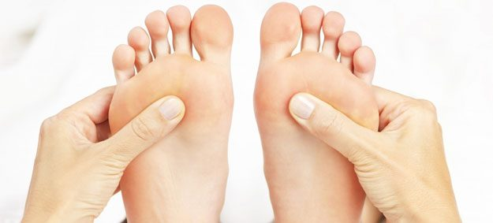

Can Reflexology Relieve Nausea? Exploring Its Benefits and Effectiveness

Nausea is a common yet unpleasant sensation that most people experience at some point in their lives. Whether it’s caused by motion sickness, pregnancy, stress, food poisoning, or medical treatments like chemotherapy, the discomfort can disrupt daily activities and leave you searching for effective relief. While over-the-counter medications and lifestyle changes are often the go-to remedies, many individuals are turning to alternative therapies to manage symptoms—one of which is reflexology.
Reflexology, an ancient healing practice that focuses on applying pressure to specific points on the feet, hands, and ears, is believed to help restore balance in the body. But can it really help alleviate nausea? In this blog, we’ll explore how reflexology may offer relief from nausea, the science behind this technique, and its potential benefits.
What is Reflexology?
Reflexology is a therapeutic technique rooted in the belief that different areas of the body are connected to specific reflex points on the feet, hands, and ears. By stimulating these pressure points, reflexologists aim to encourage healing and balance in the corresponding parts of the body. Reflexology is based on the principle that the body has natural energy pathways, and blockages or imbalances in these pathways can contribute to various health issues.
Reflexology is considered a form of complementary therapy, meaning it works alongside conventional treatments to enhance overall wellness. It has gained popularity for its ability to relieve stress, improve circulation, reduce pain, and even aid in digestion. Some individuals also report feeling more energized and balanced after a reflexology session.
How Reflexology Works
The practice of reflexology is based on the idea that certain areas of the feet, hands, and ears are mapped to correspond to organs and systems in the body. Reflexologists use their thumbs, fingers, and palms to apply pressure to these areas, promoting relaxation and stimulating the body’s natural healing processes.
For example, a reflexologist might apply pressure to a point on the sole of your foot to help alleviate tension in your stomach or digestive system. This is based on the premise that stimulating the pressure point can help “unblock” energy and restore balance to the affected area, potentially reducing symptoms like nausea.
Can Reflexology Help Relieve Nausea?
Nausea is a complex symptom that can be caused by a variety of factors, including illness, pregnancy, anxiety, or motion sickness. While there is no one-size-fits-all solution for nausea, some studies and anecdotal evidence suggest that reflexology may offer relief, particularly when it comes to nausea related to stress, digestive issues, and pregnancy.
Let’s take a closer look at how reflexology might help relieve nausea:
1. Stimulating Digestive Health
Nausea often stems from digestive issues such as indigestion, bloating, or food poisoning. Reflexology targets pressure points linked to the stomach, intestines, and other digestive organs. By applying pressure to these points, reflexologists aim to stimulate the digestive system, promote healthy function, and reduce discomfort.
For example, one commonly targeted reflex point for nausea is the area of the foot that corresponds to the stomach (located on the arch of the foot). Stimulating this point may encourage proper digestion, ease nausea, and improve overall stomach health.
2. Reducing Stress and Anxiety
Stress and anxiety are well-known triggers for nausea. When you’re feeling anxious or overwhelmed, your body goes into a “fight or flight” mode, releasing stress hormones that can upset the digestive system. Reflexology is known for its ability to induce deep relaxation and reduce stress, helping to balance the nervous system and calm the body.
Specific pressure points related to the adrenal glands, which play a role in stress response, may be targeted during a reflexology session. By helping the body relax and reducing stress levels, reflexology could indirectly ease nausea caused by emotional or psychological factors.
3. Supporting Pregnancy-Related Nausea (Morning Sickness)
Morning sickness, which affects many pregnant women, is a form of nausea that typically occurs in the first trimester of pregnancy. While medications are available to treat pregnancy-related nausea, some women seek natural remedies like reflexology to help alleviate the symptoms.
Reflexology may help ease morning sickness by targeting reflex points that correspond to the reproductive system, as well as areas linked to the stomach and digestive system. By addressing both physical and hormonal imbalances, reflexology may help reduce nausea in pregnant women, although it is always important to consult with a healthcare provider before pursuing any alternative treatments during pregnancy.
4. Promoting Circulation and Detoxification
In addition to stimulating specific organs, reflexology may help improve overall circulation and promote detoxification. Good blood circulation is essential for nutrient and oxygen delivery to tissues and organs, including those involved in digestion. By encouraging the body to detoxify and improve circulation, reflexology may help support the body’s natural healing processes, which could contribute to reducing nausea.
5. Motion Sickness Relief
Motion sickness, which occurs when there’s a disconnect between what your eyes see and what your inner ear senses, can lead to nausea, dizziness, and discomfort. Reflexology may help alleviate the symptoms of motion sickness by targeting reflex points associated with the inner ear and the balance system. By stimulating these areas, reflexology may help restore equilibrium and reduce nausea caused by motion.
Reflexology Techniques for Nausea Relief
There are several reflexology techniques that practitioners might use to help relieve nausea. While professional reflexologists often perform these techniques during a session, some individuals may be able to practice basic reflexology at home with guidance.
Common Reflexology Points for Nausea
- Stomach Point (Located on the Arch of the Foot): One of the most important reflex points for alleviating nausea is the stomach point. On the foot, the stomach point is typically located on the arch, slightly below the ball of the foot. Stimulating this point can help promote digestion, ease bloating, and reduce nausea.
- Solar Plexus (Located in the Center of the Foot): The solar plexus is a nerve cluster that plays a key role in digestion and stress regulation. This point is typically located in the center of the foot, near the base of the toes. Stimulating the solar plexus may help reduce stress-induced nausea and improve overall digestive function.
- Nausea and Vomiting Relief Point (Located on the Big Toe): The big toe corresponds to the head and neck area, and stimulating it may help relieve nausea caused by headaches or tension in the neck. Reflexologists may target this point to alleviate nausea related to migraines or other head-related issues.
- Adrenal Gland Points (Located on the Sole of the Foot): Stress is a major contributor to nausea, and the adrenal glands are responsible for producing stress hormones like cortisol. Reflexologists may focus on the reflex points corresponding to the adrenal glands, which are located along the sides of the feet, to help reduce stress and promote relaxation.
- Inner Ear Reflex Points (Located on the Feet or Hands): Reflexology may also help with nausea caused by motion sickness by targeting reflex points related to the inner ear and balance system. These points can be found on the toes or the pads of the hands, and stimulating them may help alleviate dizziness and nausea associated with motion.
Is Reflexology a Safe Option for Nausea?
For many individuals, reflexology can be a safe and effective option for managing nausea. It is a non-invasive, natural therapy that can be used alongside conventional treatments to enhance overall well-being. However, it’s essential to consult with a healthcare provider before trying reflexology, especially if you have underlying medical conditions, are pregnant, or are undergoing medical treatments that may cause nausea.
Tips for Practicing Reflexology at Home
If you’re interested in trying reflexology to relieve nausea at home, here are a few tips:
- Start with Gentle Pressure: When applying pressure to reflex points, start with gentle pressure and gradually increase intensity if needed. Reflexology should not be painful.
- Use Relaxation Techniques: Pair reflexology with deep breathing or meditation to enhance the relaxation effect and further reduce nausea.
- Consult a Professional: If you’re unsure about which reflex points to target or how to apply pressure correctly, consider visiting a certified reflexologist for a personalized treatment.
Conclusion
Reflexology offers a promising natural remedy for managing nausea. By targeting specific reflex points on the feet, hands, and ears, this therapeutic technique may help alleviate nausea caused by digestive issues, stress, pregnancy, motion sickness, and more. While research on reflexology’s effectiveness for nausea is still ongoing, many individuals report positive results from incorporating reflexology into their wellness routine.
If you’re struggling with nausea and seeking a natural solution, reflexology could be worth exploring. However, it’s always important to speak with your healthcare provider before trying new treatments, especially if you have a pre-existing medical condition or are pregnant.
By combining reflexology with other healthy lifestyle habits, you may be able to reduce the frequency and intensity of nausea, promoting better overall health and well-being.